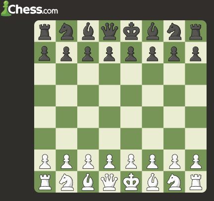
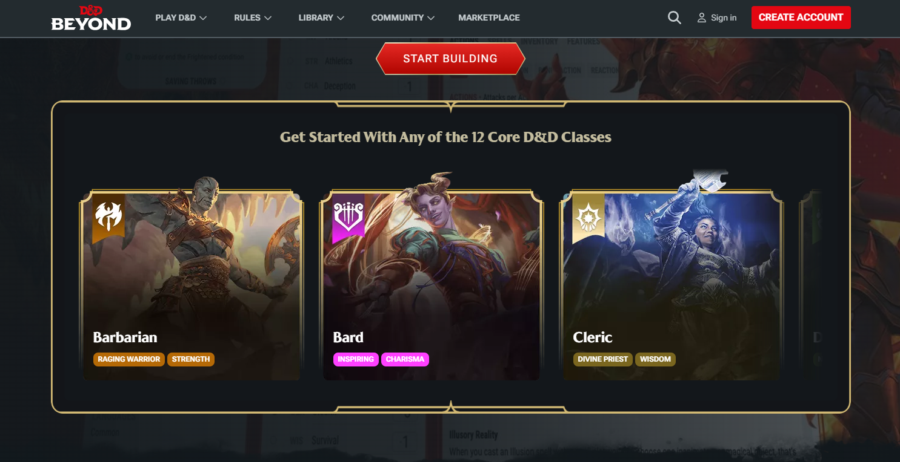

What I Like
This website is dedicated to some of the hobbies I enjoy. One of my favorite games Dungeons & Dragons will be one of them.
Fun Facts About Me
1. I like to be creative and think outside the box
2. I like to be strategic
3.I usually like to set up projects around my hobbies
My Top 5 Hobbies!
- Drawing/Art
- Crafting
- Dabbling in Chess
- Dungeons & Dragons
- Playing Video Games
Links To What I Do
Some of the things that I do for fun are on websites that I can acess anytime.
Here are some resources to try them out for yourself!

Watch the introduction video!
